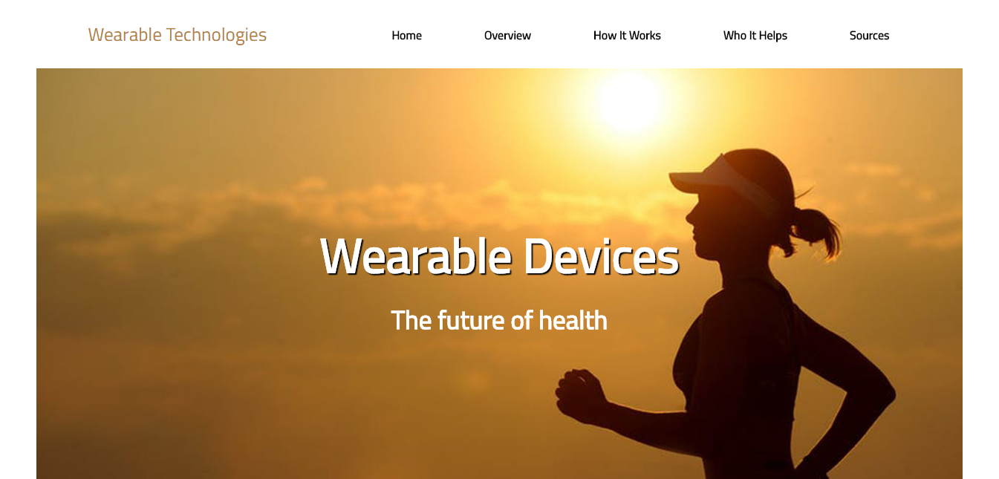

Ella Mathewson

This website was created in my Intro to Interactive Media class. We researched a topic in technology, wrote a paper about it, and then created a website hilighting the key points of our paper. My topic was wearable devices, and how they are beneficial to individual monitoring of our daily health. You can view the whole site here.